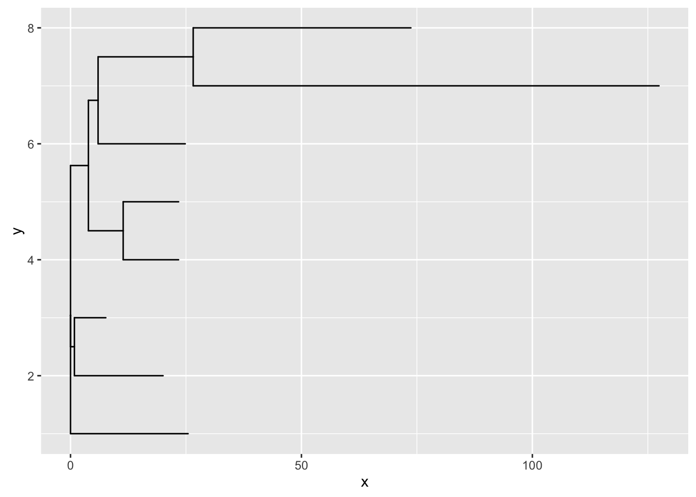
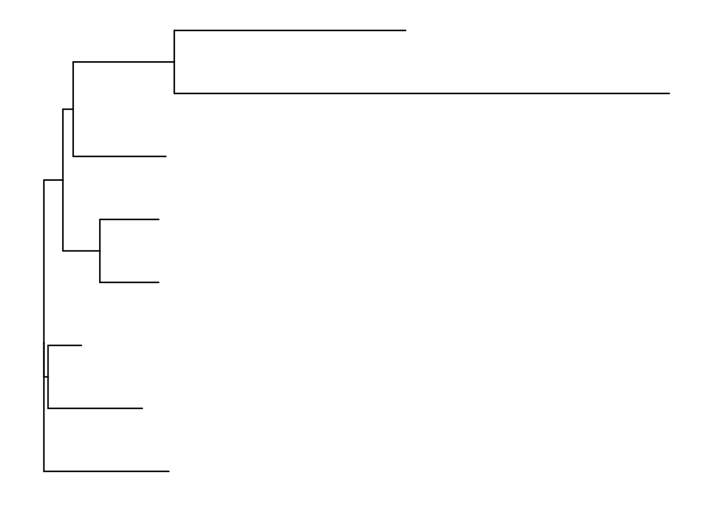
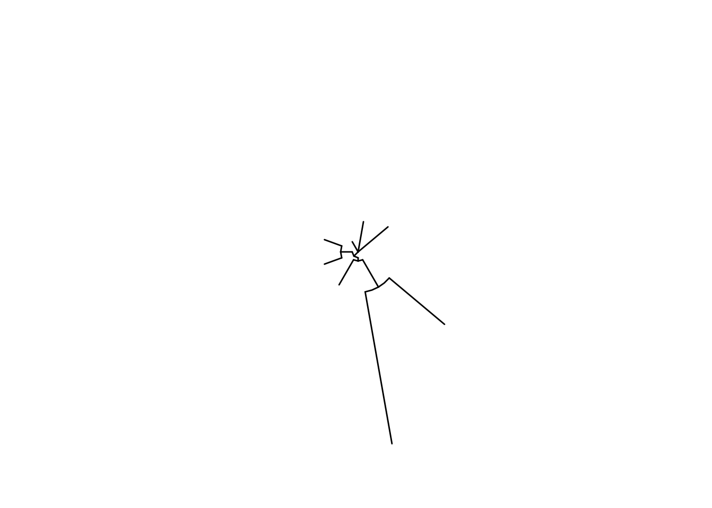
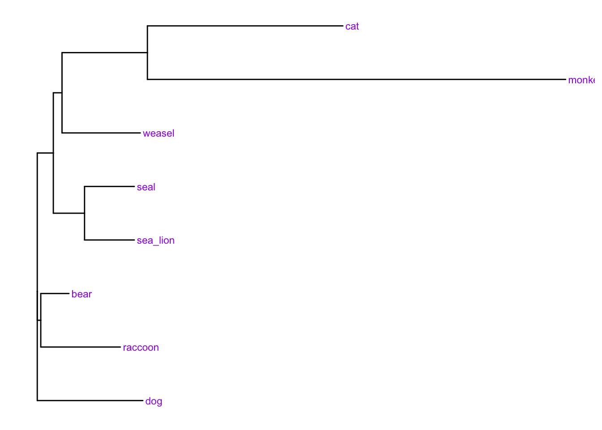
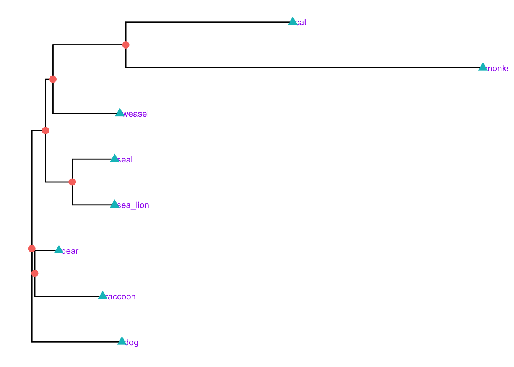
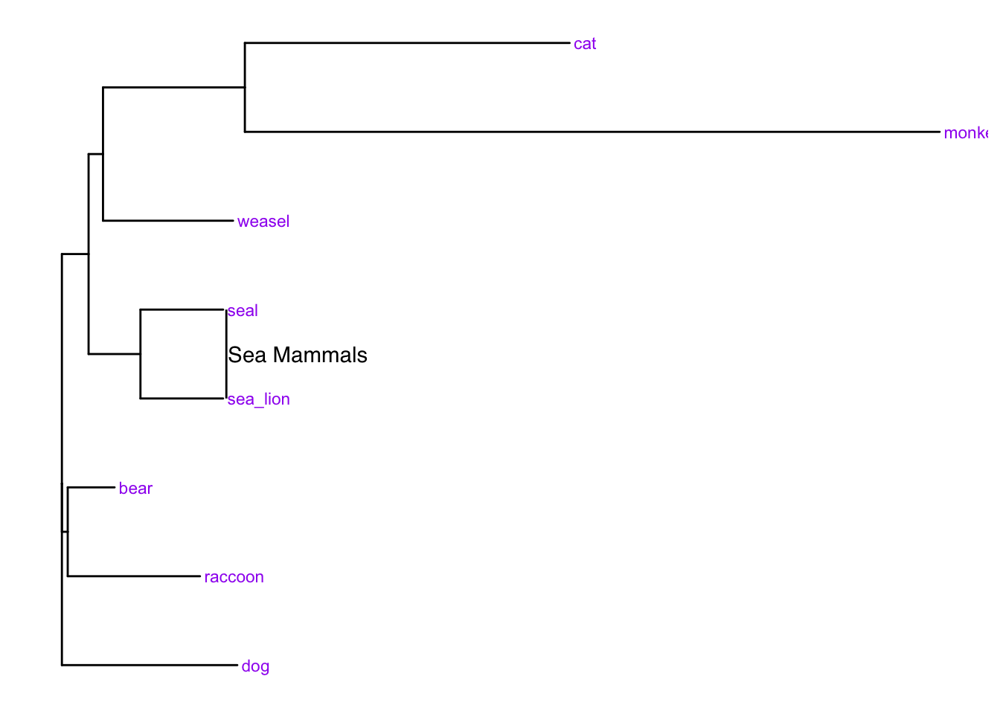
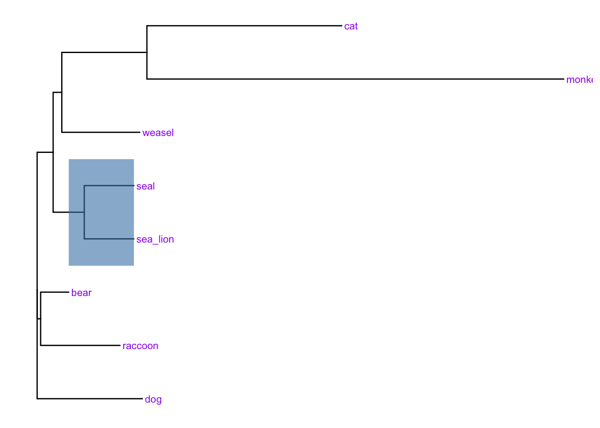
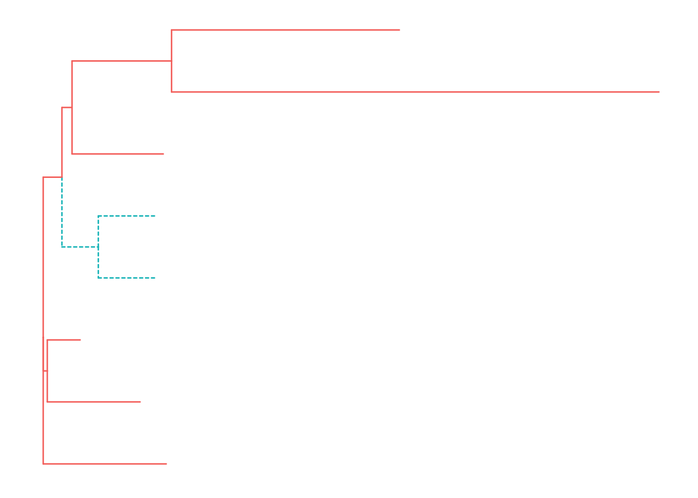
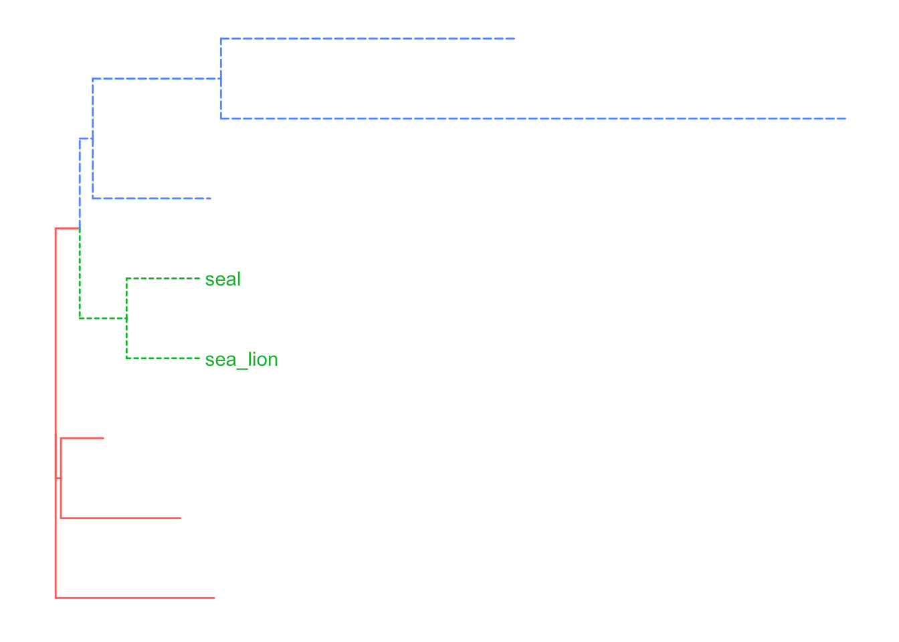
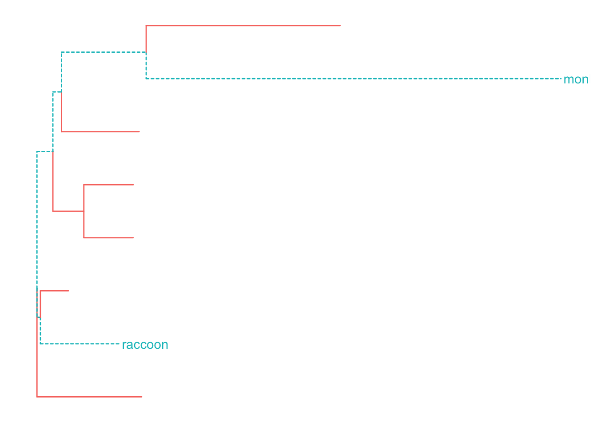

ggtree - a Bioconductor package for displaying phylogenetic treesBioconductor is a (very) large set of libraries for operating on biological data types https://www.bioconductor.org/ . ggtree is a library inspired by ggplot for drawing trees. Much of what we’ve already seen in ggplot is transferrable to ggtree so the syntax should be familiar.
10.1 Installing
ggtreeInstalling bioconductor takes a long time and isn’t done in the same way as with other R packages. To install first run this special script in the R console (making sure you have an internet connection) :
source("https://bioconductor.org/biocLite.R")in the R console (making sure you have an internet connection). Bioconductor libraries can then be installed with thebiocLite()function `biocLite(“ggtree”)
ggtree takes a range of common tree formats as input. We’ll use a sample file in newick format. This creates a special sort object called a ‘phylo’ object that knows all sorts of information about the tree.
library(ggtree)
tree <- read.tree("data/mammals.nwk")
str(tree)## List of 4
## $ edge : int [1:13, 1:2] 9 10 10 9 11 12 12 11 13 14 ...
## $ Nnode : int 6
## $ tip.label : chr [1:8] "raccoon" "bear" "sea_lion" "seal" ...
## $ edge.length: num [1:13] 0.846 19.2 6.8 3.874 7.53 ...
## - attr(*, "class")= chr "phylo"
## - attr(*, "order")= chr "cladewise"The tree can be drawn using the geom_tree() function.
ggplot(tree) + geom_tree()
There is a special theme that sorts out the background for trees:
ggplot(tree) + geom_tree() + theme_tree() And because you nearly always want these three ggtree provides a utility function to do all of that - ggtree()
ggtree(tree)With this function we can add layout options
ggtree(tree, layout = "circular")
Adding labels to treetips is done with the geom_tiplab() geom.
ggtree(tree) + geom_tiplab(size=3, color="purple")
Adding the nodes is done with special options to the geom_point() geom. The shape and colour aesthetics are set to the variable isTip which is an internal variable in the tree object.
p <- ggtree(tree) + geom_tiplab(size=3, color="purple")
p + geom_point(aes(shape=isTip, color=isTip), size=3)
More useful is the ability to colour particular bits of the tree. First let’s add a highlight bar to the side of the tree highlighting the sea mammal family. To do this we need to find the first node in the tree common to the clade we want to highlight. For this it’s node number 12 and we use the geom_cladelabel() geom to add. We can use multiple geom_cladelabel() layers for more labels.
p + geom_cladelabel(node=12, label="Sea Mammals") You can also use blocks of colour for this:
p + geom_hilight(node=12, fill="steelblue", alpha=.6)
To actually find the node number we need we can use the MRCA() function and pass it a list of labels we want the most recent common ancestor for
MRCA(tree, tip=c('seal','sea_lion'))## [1] 12You can use this information to colour different parts of the tree, too. First you need to mark the tree objects as having a new group factor with the groupClade(), function and then dynamically colour by the new group factor
tree <- groupClade(tree, node=12)
ggtree(tree, aes(color=group, linetype=group))
And you can preferentially operate on a clade by using the geoms on particular group numbers, here adding a label only to group 1
tree <- groupClade(tree, node=c(12, 13) )
ggtree(tree, aes(color=group, linetype=group)) + geom_tiplab(aes(subset=(group==1)))
You can work on arbitrarily defined groups with the groupOTU() function
tree <- groupOTU(tree, focus=c("monkey", "raccoon"))
ggtree(tree, aes(color=group, linetype=group)) + geom_tiplab(aes(subset=(group==1)))